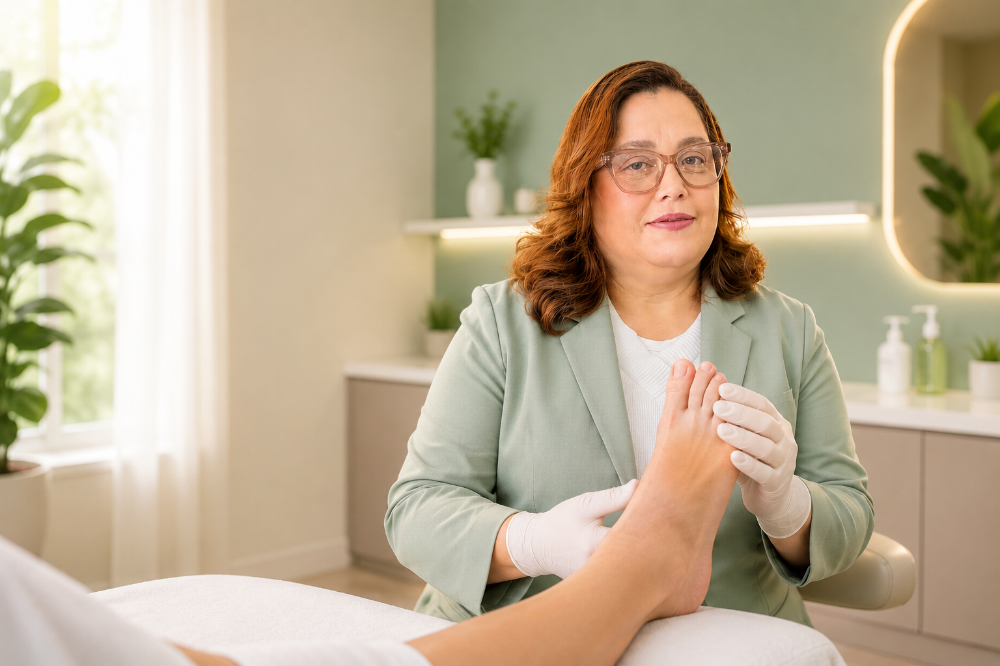
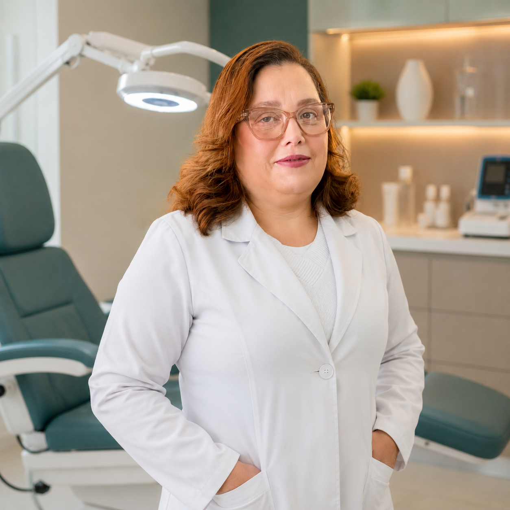
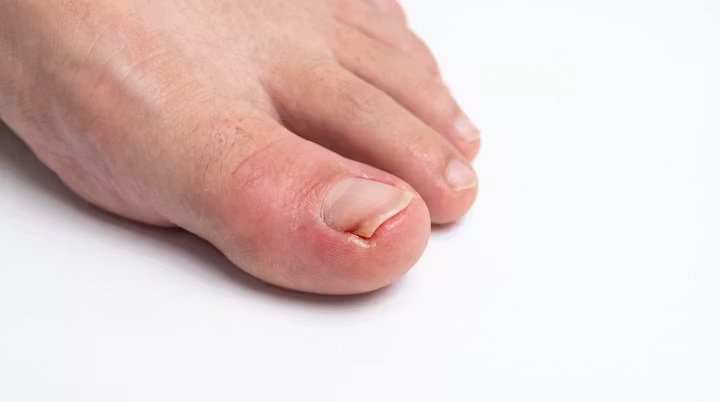
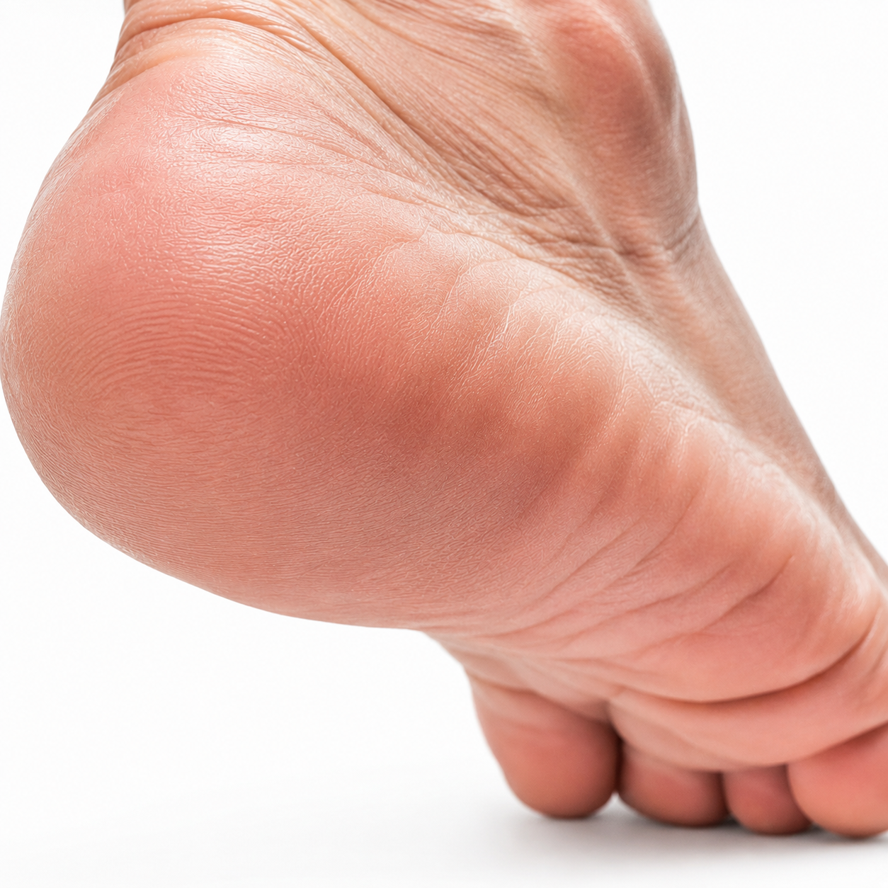

Cuidamos dos seus pés com dedicação, conhecimento e carinho para que você continue caminhando com conforto e segurança.

Na Levitatà Podologia, acreditamos que cuidar dos pés é cuidar da liberdade de viver. Oferecemos um atendimento humanizado, seguro e personalizado, com foco na prevenção, tratamento e bem-estar para pessoas de todas as idades.
Nossa missão é promover saúde e qualidade de vida por meio de técnicas modernas, ambiente acolhedor e uma equipe comprometida com a excelência.
Dra. Renata Kemp é a profissional responsável por cada atendimento, com anos de experiência em podologia clínica e podogeriatria.
Atendimento Domiciliar – Levamos todo o cuidado e estrutura até você.

Avaliação e tratamento de alterações nos pés com técnicas modernas e seguras.
Cuidados especializados para prevenção e tratamento de complicações em pacientes diabéticos.
Atendimento voltado às necessidades específicas dos pés na terceira idade.
Tratamento eficaz e minimamente invasivo para alívio da dor e prevenção de recidivas.
Remoção segura e orientação para evitar o retorno dos calos.
Tratamento com técnicas indolores e alta eficácia.
Diagnóstico e tratamento para infecções fúngicas, com acompanhamento personalizado.
Indicação e confecção de palmilhas e dispositivos para melhorar a pisada e o conforto.
Cada paciente é único e tratado com toda atenção e respeito.
Biossegurança rigorosa em todos os procedimentos.
Levamos todo o cuidado e estrutura até sua casa.
Planos de cuidado adaptados às suas necessidades.
Baseadas nas melhores evidências científicas.
Atendimento pensado para seu conforto e bem-estar.
Resultados reais que transformam a qualidade de vida de nossos pacientes.




Imagens com autorização dos pacientes.
"Excelente atendimento. A Renata veio até minha casa e resolveu meu problema com unha encravada. Super recomendo!"
"Sou diabética e sempre tive receio de cuidar dos pés. O atendimento domiciliar da Renata me trouxe muita segurança."
"Minha mãe de 82 anos foi atendida em casa com todo carinho. Profissionalismo e dedicação que emocionam."
Você agenda seu horário e a Dra. Renata Kemp vai até sua casa com todos os equipamentos necessários para um atendimento completo e seguro.
Atendemos Guarulhos e toda região metropolitana. Consulte disponibilidade para outras áreas.
Com o tratamento adequado e orientações de cuidados domiciliares, o retorno é raro. Acompanhamos cada caso para garantir a resolução definitiva.
Sim. Pacientes diabéticos devem ter acompanhamento regular para prevenir complicações como úlceras e infecções.
Utilizamos técnicas modernas e minimamente invasivas para garantir o máximo de conforto. A maioria dos procedimentos é indolor ou com desconforto mínimo.
Agende seu horário e vamos até você!
Guarulhos e região
Levamos todo o cuidado e estrutura até você em Guarulhos e região.
Agende pelo WhatsApp e receba nossa visita!